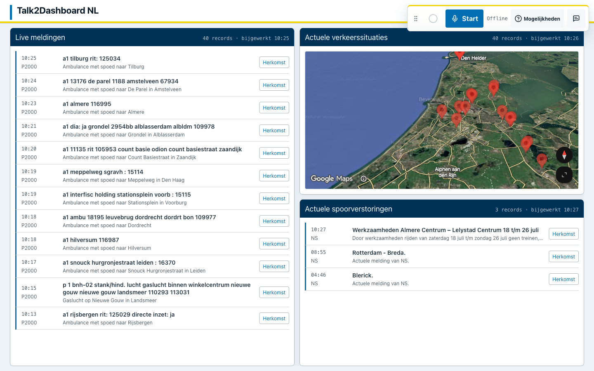

Hoofdrijbaan richting Utrecht. Eén rijstrook beperkt beschikbaar.
Bekijk herkomstTalk2Dashboard NLLandelijk operationeel beeld
Live · 7 bronnen
Ruimtelijk beeld
Nederland · live
P2000VerkeerSpoor


Hoofdrijbaan richting Utrecht. Eén rijstrook beperkt beschikbaar.
Bekijk herkomst